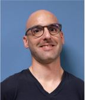

Introduction
Récemment diplômé en tant que développeur web, web mobile suite à une reconversion
professionnelle.
Je suis un cursus en tant que Concepteur Développeur Application, en alternance
afin
de pouvoir monter en compétences et consolider mes acquis. Voici ma description.
 Télécharger mon CV
Télécharger mon CV